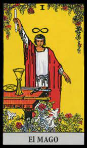

Tarot
Arcanos Mayores Los arcanos mayores, los secretos mayores, transmiten leyes y principios universales, los grandes temas del «alma humana» a lo largo de su existencia en este plano y responden a aquellos arquetipos que le dan sentido a las experiencias humanas de todos los tiempos. Los arcanos mayores presentan personajes y escenas altamente simbólicas. Son aparentemente independientes entre sí, aunque entre ellos existe una relación estrecha, ya que representan un orden (por eso están numeradas) en el cual cada arcano requiere la existencia del otro. Sus figuras son bastantes conocidas aún por los más inexpertos, dado que son personajes como el Emperador, La Emperatriz, El Diablo, La Muerte, El Sol y La Luna, entre otros. ¿Quién no tiene una idea o no los ha visto alguna vez?. Cada una de estos arcanos tiene un valor simbólico y representa arquetipos que están en el inconsciente colectivo y por ello nos resultan familiares y comprensibles. Arcanos menores Los arcanos menores, los secretos menores, informan acerca de los acontecimientos del día a día, los eventos cotidianos que nos afectan en la experiencia inmediata, con lo cual aportan a la lectura la información concreta y tangible de lo cotidiano. Son 56 cartas compuestas por cuatro series (o palos) y cada una de ellas consta de diez cartas numeradas y cuatro figuras llamadas cartas cortesanas o de la corte: Paje, Caballero, Reina y Rey (para totalizar catorce arcanos menores por cada serie o palo) Los arcanos menores de número; es decir, del As (1) al 10, representan los acontecimientos del día a día, mientras que las figuras o cartas cortesanas responden a descripciones o tipologías humanas, diferentes personalidades o personifican situaciones.